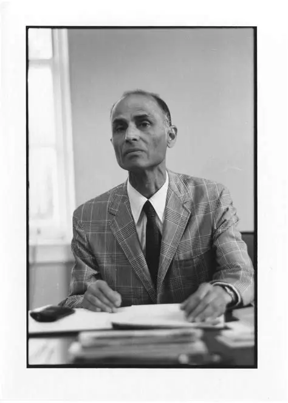

Born in Kanpur, Harish-Chandra transcended disciplines from theoretical physics under P. A. M. Dirac to almost single-handedly constructing the monumental edifice of infinite-dimensional representation theory and non-commutative harmonic analysis on reductive Lie groups.

“He was a man of intense concentration, profound aesthetic sensibility, and immense mathematical stamina. He worked with the dedication of an ascetic and the vision of a poet.”
A precision chronology tracking his formative years, education, mentors, mathematical transformation, and timeless contributions.
Born on October 11, 1923, in Kanpur, Uttar Pradesh (then United Provinces). His father, Chandrakishore, was an executive engineer with the Public Works Department. Harish-Chandra spent his early childhood studying at home under tutors and developed an early affinity for literature, painting, and music.
Kanpur RootsCompleted his M.Sc. in Physics at the University of Allahabad in 1943, securing first rank. He studied under the celebrated physicist Prof. K. S. Krishnan (FRS), who recognized his extraordinary analytical gifts and recommended him to Homi J. Bhabha at the Indian Institute of Science (IISc), Bangalore.
Allahabad & IISc BangaloreWent to the University of Cambridge as a research student under Paul A. M. Dirac. In 1947, he was awarded his Ph.D. for his thesis on relativistic wave equations. During this era, he accompanied Dirac to the Institute for Advanced Study in Princeton as his scientific assistant.
Cambridge University · Ph.D.At Princeton and Columbia, interactions with Hermann Weyl, Claude Chevalley, and Emil Artin convinced Harish-Chandra that physics was overly imprecise for his standards of rigour. He decided to turn his full intellect toward the representation theory of semisimple Lie groups.
Foundational PivotServed on the faculty of Columbia University. Here he established the characters of representations of semisimple Lie groups, the Plancherel formula for complex semisimple groups, and began the formulation of discrete series representations.
Columbia UniversityAppointed Permanent Member and subsequently IBM von Neumann Professor at the Institute for Advanced Study, Princeton. Elected Fellow of the Royal Society (FRS) in 1973, awarded the Cole Prize by the American Mathematical Society, and received the Ramanujan Medal. He passed away at Princeton on October 16, 1983.
IAS Princeton · FRSHarish-Chandra's work forms the non-negotiable bedrock of the Langlands Program, modern quantum field theory, and automorphic forms. His birth city honors him through the Harish-Chandra Research Centre at CSJMU Kanpur.
Living LegacyDiscover twelve specialized student digital tracks dedicated to Harish-Chandra's life and scientific papers.
Explore 12 Exhibition Tracks